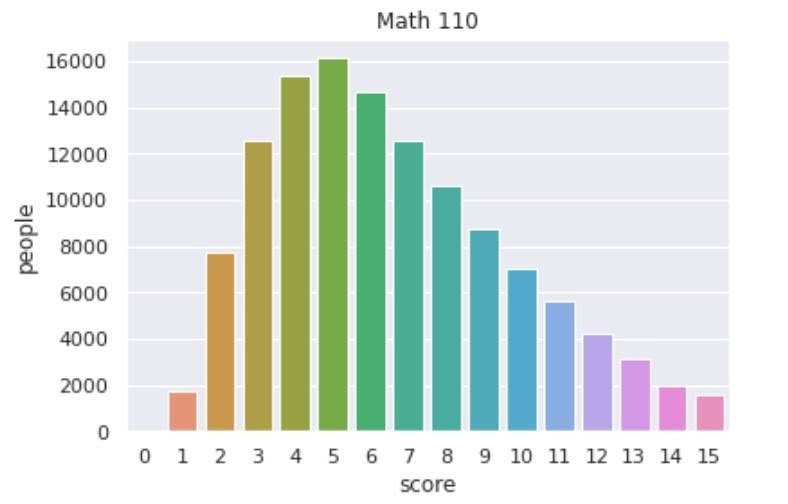
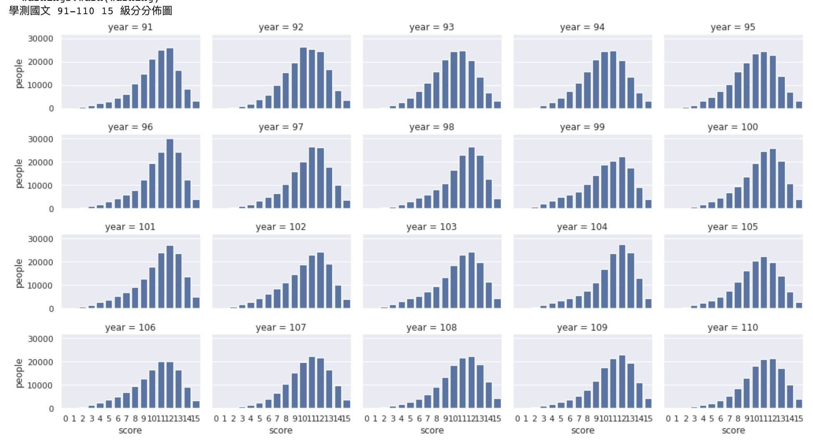
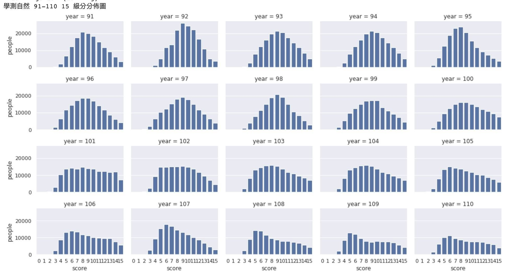
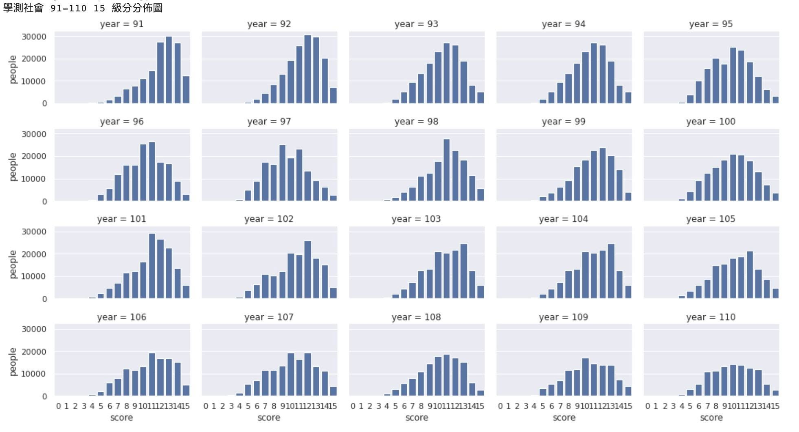
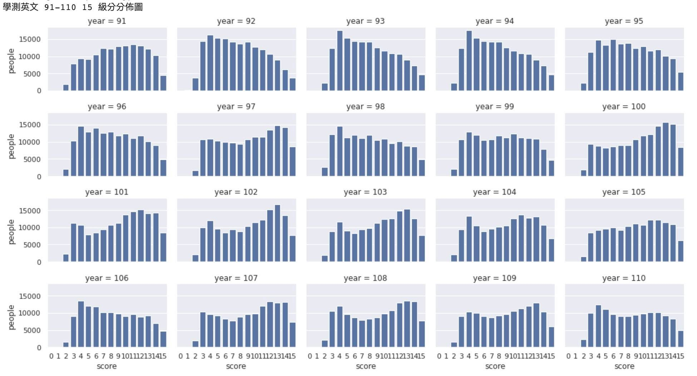

學測成績剛出爐，我用 Python 將 20 年五科的數據繪製些圖表。
大家可看這五科的級分分佈圖看可否看出有哪些特徵。
數學今年頂標只有 11 級分（滿級15)，其實能考到頂標已經相當於 88% 以上。前 12% 的人占了前 5 級分 ，後 88% 佔了 10 級分，
這表示數學很優秀與很頂尖的差距還能拉開到 5 個級分。
而 11 級分換算成原始分數只有 60.3 。相當於近 8成5 的考生原始學測數學成績是不及格的。有些說法覺得全國的統一考試不該考如此難，讓頂尖人才直接在二階筆試再來鑑別出差異。




